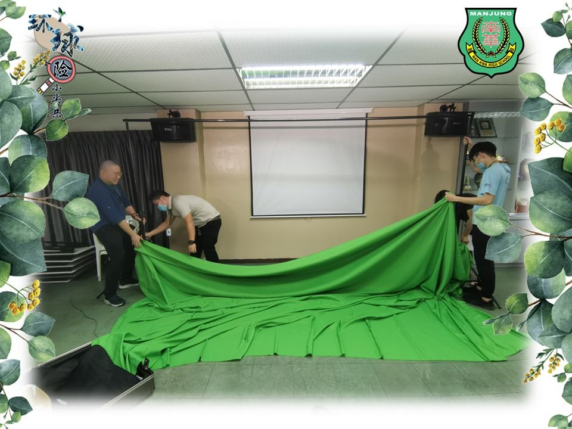
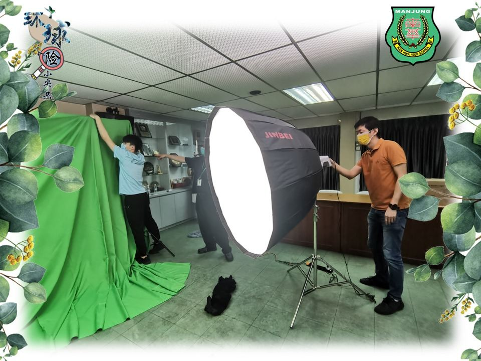
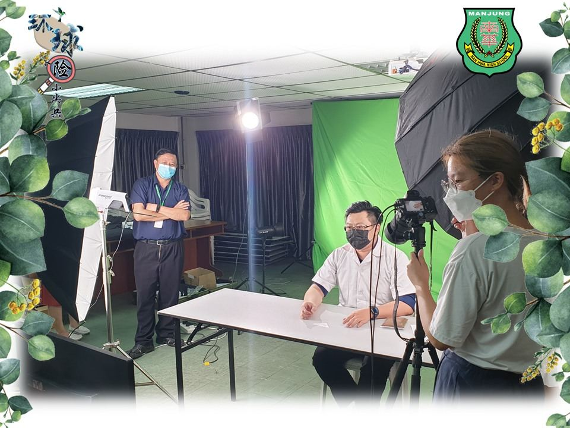
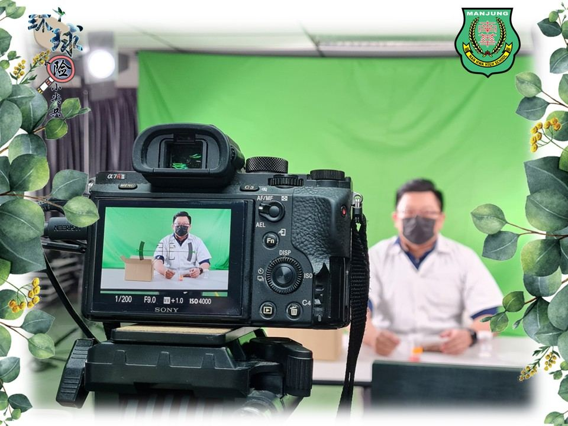
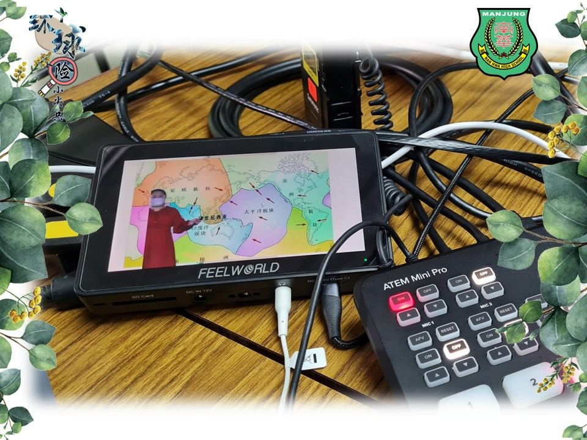
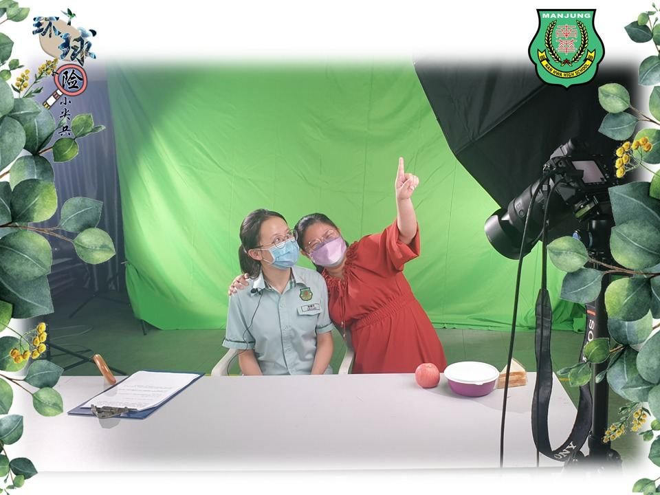
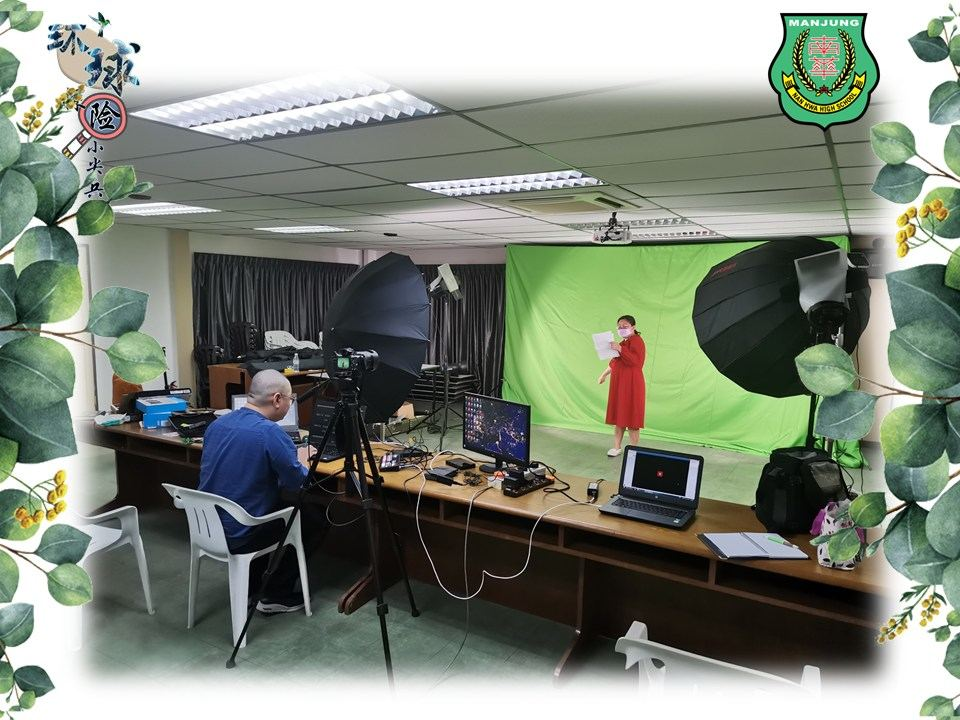

“环球探险小尖兵”倒数四天！
“环球探险小尖兵”倒数四天！
一场集“自主学习、周游列国、趣味探险、探索科学、走进自然”等元素的线上探险队即将出发！为了要给孩子们一场难忘的旅行，让孩子化身成为探险实习生，一起环球探索，亲身亲历跨学科、跨领域、开阔视野的冒险！
今天在本校董事长、校长、老师、助理及学生们的齐心协力下，完成了技术彩排。现场从杂乱无序到井井有条，各位功不可没！
小尖兵们！你们期不期待？说好了！我们 25-02-2022（星期五）线上不见不散！
#南华独中 #环球探险小尖兵 #曼绒 #实兆远






